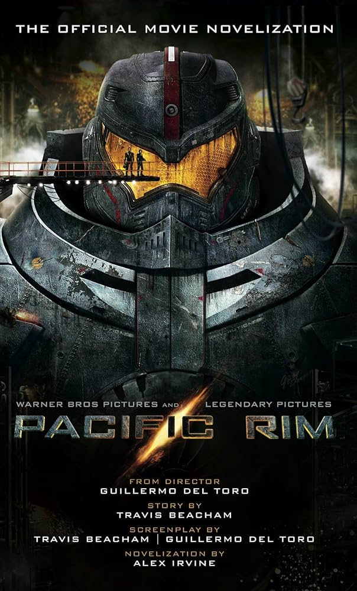

Category: Books
Recommendation Rating: 1/10
Difficulty Level: 8/10
Price: ¥79
Purchase Date: 2014/9/30

The Pacific Rim movie was released in 2013, and I absolutely loved it, 10/10. The second one, however, was a total disappointment. In one sentence, it was garbage. Around 2014, I was also preparing for the TOEFL exam, so I “thought” buying an English book for practice would be a good idea.
The result? It was as futile as buying an iPad to “study”—absolutely impossible. This novel is completely different from the movie. While the film is an action-packed, adrenaline-fueled story, the book contains large portions of dialogue and narrative scenes. It’s also packed with specialized biological and mechanical terminology, making it extremely difficult to read. It’s definitely not suitable for beginners trying to improve their English.
Pros
- None.
Cons
- Contains a lot of specialized biological terminology.
- The content lacks tension and excitement.
测评 环太平洋英文小说
类别： 书
推荐指数： 1/10
难度指数： 8/10
价格： ¥79
购买时间：2014/9/30
环太平洋电影是 2013 年上映的，是我非常喜欢的电影，10/10。虽然第二部非常一言难尽，其实一言可尽，就是垃圾。2014 年好像我也在准备托福考试，就想买本英文书实战练习一下。结果就和买了 iPad 试图学习一样，完全不可能。这本小说和电影完全不是一回事，电影是个热血爽文，但是小说有大段大段的文戏。并且涉及了相当多的生物和机械专业词汇，读起来佶屈聱牙，完全不适合用来英语入门。
优点
- 这个真没有
缺点
- 生物专业词汇很多
- 内容也不紧张刺激